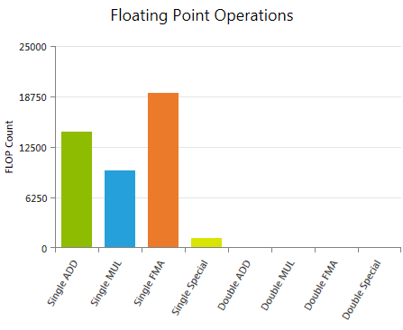
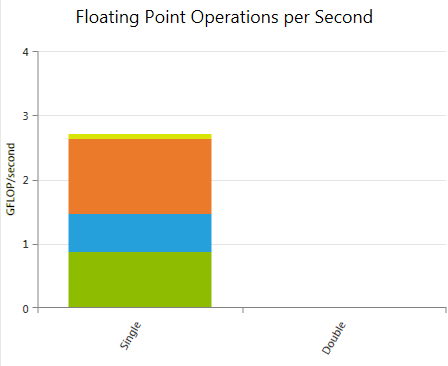

每秒浮点运算次数（FLOPS）是比较不同算法、不同实现变体或不同计算设备的常用指标。在优化 kernel 代码时，它的主要价值在于估计一种实现与目标设备的理论算术峰值性能的接近程度。基于此，它可以用来跟踪 kernel 性能优化的进展；尽管该指标本身对"是什么导致了性能偏低"提供的洞察有限。
所有 CUDA 计算设备都遵循 IEEE 754-2008 二进制浮点表示标准，但存在一些小的例外。这些例外在 CUDA C Programming Guide 的 浮点标准 一节中有详细描述。其中一个关键差异是融合乘加（FMA）指令，它将乘法和加法合并为一条指令执行。其结果通常与分别执行两步运算所得到的结果略有不同。
本文档中对具体汇编指令的引用，指的是硬件的实际指令集架构（ISA），称为 SASS。关于不同 CUDA 计算架构 SASS 汇编指令的描述和完整列表，请参阅 NVIDIA CUDA 工具 cuobjdump 的文档。
浮点运算 报告按指令类别分组的已执行浮点指令命中数的加权和。所应用的权重可以在数据收集前通过 Activity 页面上的 实验配置 自定义。 根据实际操作和所使用的编译器选项不同，CUDA C 中一条浮点指令在汇编代码中可能对应多条指令。所报告的数值是基于已执行的汇编指令，因此数字可能与仅从 CUDA C 代码推断出的预期不一致。可使用 源码视图 页面研究高级代码与汇编代码之间的映射关系。 指标Single ADD
所有已执行的单精度浮点加法（ Single MUL
所有已执行的单精度浮点乘法（ Single FMA
所有已执行的单精度浮点融合乘加（ Single Special
所有已执行的单精度特殊运算的加权和，包括倒数（ Double ADD
所有已执行的双精度浮点加法（ Double MUL
所有已执行的双精度浮点乘法（ Double FMA
所有已执行的双精度融合乘加（ Double Special
所有已执行的双精度特殊运算的加权和，包括倒数（ |
每秒浮点运算次数 报告单精度和双精度下，每秒已执行浮点指令命中数的加权和。该图表是一个堆叠柱状图，所使用的指令类别与 浮点运算 图表完全相同。 指标Single
所有已执行的单精度运算每秒的加权和。一个 CUDA 设备的单精度浮点峰值性能定义为 CUDA Cores 数乘以图形时钟频率再乘以 2。乘以 2 的因子来自使用融合乘加（ Double 所有已执行的双精度运算每秒的加权和。 |
CUDA C Best Practices Guide 给出了若干优化浮点 算术指令 的通用建议：
同时也尽量减少所执行的低吞吐量算术指令数量。CUDA C Programming Guide 给出了各计算能力下所有原生 算术指令 的预期吞吐量列表。
NVIDIA GameWorks Documentation Rev. 1.0.150630 ©2015. NVIDIA Corporation. All Rights Reserved.